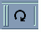
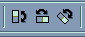
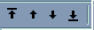
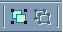
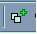

- Vıber a editácia objektov - biela šipka
- oznaèenie
- Aby sme mohli objekt presúva�-kopírova� musí by� oznaèenı. Na oznaèenie 1 objektu
staèí v re�ime "Vıber a editácia objektov" kliknú� na èas� objektu. Ak chceme ku vıberu
pripoji� ïalší stlaèíme shift a klikneme na ïalší objekt. Ak chceme oznaèi� viaceré objekty naraz
�ahaním pri stlaèenom ¾avého tlaèidla myši sa vytvorí tenkı modrı rámik, všetky objekty ktoré sú celé vnútri tohoto
rámika sú vybrané.
- presun oznaèeného objektu/objektov
- myšou nabehneme na oznaèenı objekt (kurzor sa zmení) a �ahaním objekt presunieme na novú pozíciu. Ak sa oznaèené objekty
skladajú len z èiar treba objekty "chyti�" za niektorú z èiar.
- Kopírovanie oznaèeného objektu/objektov
- myšou nabehneme na oznaèenı objekt (kurzor sa zmení) a �ahaním pri stlaèenom Ctrl objekt presunieme na novú pozíciu.
- Otáèanie zvoleného objektu
- oznaèenı objekt/objekty mo�no pomocou nástroja  otoèi�. Stred
otáèania aj uhol mo�no nastavi�.
Stred - tam kde stlaèíme ¾avé tlaèítko myši bude stred (nepusti�)
Uhol - �ahaním myši (v smere osi x) urèíme virtuálne rameno a jeho posunutie nahor/nadol urèí ve¾kos� uhla. Ak dr�íme Ctrl je uhol
v�dy násobkom 15-tich stupòov. Ak máme sie� myš behá len po uzloch siete (¾ahšie sa robia rovnaké uhly)
- Preklopenie okolo osi
- Pou�ívame na symetriu pod¾a osi. 
Máme mo�nosti preklopi� cez os x (vertikálne), cez os z (horizontálne alebo cez ¾ubovo¾nú os (vy�aduje jej zadanie)
- oznaèenı objekt/objekty mo�no pomocou nástroja otoèi�. Stred
- Perspektíva
- Zvolenı objekt (èastejšie objekty) mo�no pomocou tohoto nástroja deformova� a vytvára� dojem perspektívy.
- Presúvanie priesvitok
- Ked�e celı obrázok je tvorenı s objektov na priesvitkách (postupnos� zobrazovania) je potrebnı nástroj na preskupovanie poradia.
 Ka�dı objekt (priesvitku) mo�no v poradí posla�
- úplne nahor
- o jednu vrstvu nahor
- o jednu nadol
- úplne nadol
- Skupiny
-  Ak oznaèíme viaceré objekty mo�no ich spoji� do skupiny
(budú kamaráti, u� sa budú hıba�, deformova�, otáèa� spolu). Naopak mo�no skupinu zas rozdeli� na jednotlivé objekty.
- Duplikaènı re�im
- Šikovnı nástroj na "mno�enie objektov. Ak je tlaèítko zatlaèené, tak všetky presuny, otáèania, preklápania sa urobia do nového
objektu a starı objekt zostane (z jedného budú dva)
- Kladivo
- Nástroj na rozbitie plošného objektu na uzavretú postupnos� èiar, èím získame mo�nos� editova� niektorú stenu.
- Tvarovanie objektov - èierna šipka
- Tento re�im pou�ívame na zmenu tvaru objektov - posuny bodov, zmenu tvaru hrany
- aktivovanie
- stlaèením èiernej šipky na hlavnom paneli sa oznaèenı objekt dá do re�imu tvarovania, inı postup je poklopanie na niektorı objekt.
- tvarovanie èiar
- ak zvolíme na tvarovanie zalomenú úseèku, mô�me hneï presúva� jednotlivé body hada. Okrem tejto mo�nosti máme v alternatívnom paneli k dispozícii
ïalšie mo�nosti, ktoré sa však tıkajú len jedného "èlánku" nášho hada a tak musí by� najprv kliknutím zvolenı (ozelenie) a� potom sa nám
alternatívny panel nástrojov sprístupní.
- prida� uzol - do stredu zvoleného èlánku sa pridá ïalší bod
- odobra� uzol - jeden bod zvoleného èlánku je zvıraznenı (je celı èierny) a tento uzol bude z hada odobranı. Poèet èlánkov hada sa zní�i o 1.
- zmeni� na úseèku - zvolenı èlánok sa zmení na úseèku
- zmeni� na krivku - zvolenı èlánok sa zmení na krivku
- spôsob nadpájania hada vo zvıraznenom uzle
- symetrickı - najhladší prechod
- hladkı
- ostrı - umo�òuje vytvára� špice
- 15 stupòov - ak zvolím tento re�im aktívny èlánok mo�no meni� len tak aby uhol s osou x bol násobkom 15 stupòov
- nadpoji� na existujúcu - pomocou tohto tlaèítka mo�no dva hady spoji� do jedného
- douzavrie� - spojí krajné body hada úseèkou - èím vznikne plošnı útvar, ktorého plochu mo�no vyfarbova�
- rozdeli� - had sa roztrhne na dva samostatné hady (ale musíme ešte cez menu - objekty zvoli� zruši� kombinácie)
- tvarovania plošnıch útvarov
- ak je zvolenı objekt, ktorı je definovanı len ako plošnı, alternatívny panel ponúka iné nástroje.
- mód tvarovania - ak je mód aktívny tak objekt sa dá meni� len rovnobe�nım posúvaním hrán (nedá sa meni� napr. posunutím jedného vrchola)
- 15 stupòov - pri neaktívnom móde - uhol hrán s osou x sa mení po 15-tich stupòoch
- vıber tvaru - ka�dı plošnı objekt existuje vo viacerıch variantách a tu mo�no zvoli� niektoré z nich. Predošlé zmeny sa zachovajú.
- kladivo - rozbije plošnı objekt na uzavretého hada (ktorı mô�e ma� plošnú farbu). Cesta spä� nie je - uzavretı had sa nedá zmeni�
na plošnı objekt.